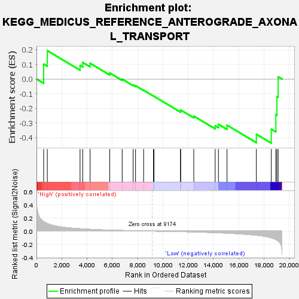
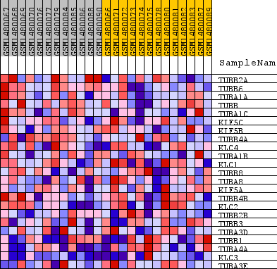
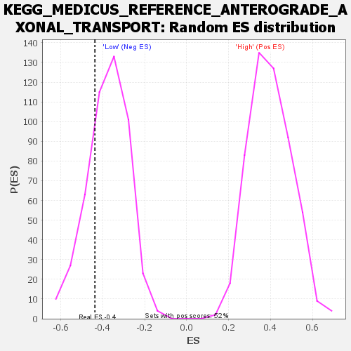

| Dataset | WG6v3.MRPL3.cls#High_versus_Low.MRPL3.cls#High_versus_Low_repos |
| Phenotype | MRPL3.cls#High_versus_Low_repos |
| Upregulated in class | Low |
| GeneSet | KEGG_MEDICUS_REFERENCE_ANTEROGRADE_AXONAL_TRANSPORT |
| Enrichment Score (ES) | -0.43773425 |
| Normalized Enrichment Score (NES) | -1.166258 |
| Nominal p-value | 0.25420168 |
| FDR q-value | 1.0 |
| FWER p-Value | 1.0 |

| SYMBOL | TITLE | RANK IN GENE LIST | RANK METRIC SCORE | RUNNING ES | CORE ENRICHMENT | |
|---|---|---|---|---|---|---|
| 1 | TUBB2A | TUBB2A | 569 | 0.142 | 0.1023 | No |
| 2 | TUBB6 | TUBB6 | 858 | 0.115 | 0.1939 | No |
| 3 | TUBA1A | TUBA1A | 3447 | 0.035 | 0.0934 | No |
| 4 | TUBB | TUBB | 3659 | 0.033 | 0.1130 | No |
| 5 | TUBA1C | TUBA1C | 4242 | 0.027 | 0.1078 | No |
| 6 | KIF5C | KIF5C | 5798 | 0.014 | 0.0411 | No |
| 7 | KIF5B | KIF5B | 6781 | 0.009 | -0.0010 | No |
| 8 | TUBB4A | TUBB4A | 7649 | 0.006 | -0.0405 | No |
| 9 | KLC4 | KLC4 | 7838 | 0.005 | -0.0457 | No |
| 10 | TUBA1B | TUBA1B | 8476 | 0.002 | -0.0763 | No |
| 11 | KLC1 | KLC1 | 9257 | -0.000 | -0.1162 | No |
| 12 | TUBB8 | TUBB8 | 9300 | -0.000 | -0.1181 | No |
| 13 | TUBA8 | TUBA8 | 11394 | -0.008 | -0.2185 | No |
| 14 | KIF5A | KIF5A | 11411 | -0.008 | -0.2118 | No |
| 15 | TUBB4B | TUBB4B | 12446 | -0.013 | -0.2534 | No |
| 16 | KLC2 | KLC2 | 14138 | -0.023 | -0.3192 | No |
| 17 | TUBB2B | TUBB2B | 14398 | -0.025 | -0.3092 | No |
| 18 | TUBB3 | TUBB3 | 15077 | -0.031 | -0.3153 | No |
| 19 | TUBA3D | TUBA3D | 17398 | -0.063 | -0.3769 | Yes |
| 20 | TUBB1 | TUBB1 | 18579 | -0.102 | -0.3427 | Yes |
| 21 | TUBA4A | TUBA4A | 18940 | -0.128 | -0.2424 | Yes |
| 22 | KLC3 | KLC3 | 19024 | -0.137 | -0.1193 | Yes |
| 23 | TUBA3E | TUBA3E | 19125 | -0.151 | 0.0153 | Yes |

